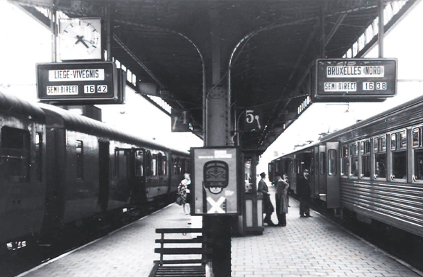
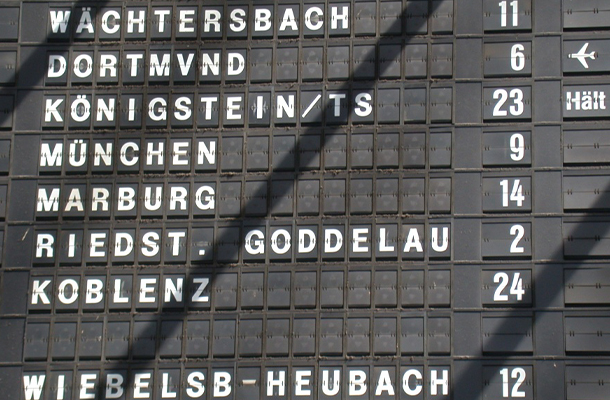
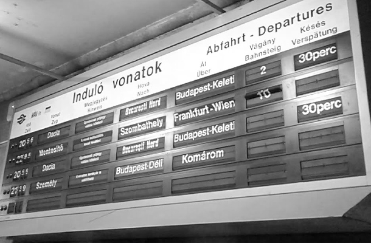

Il tele indicatore a palette si presenta come uno strumento per l’informazione di dati, di fatto I teleindicatori a palette hanno avuto grande diffusione presso stazioni ferroviarie e marittime, aeroporti, veicoli di trasporto pubblico e, più in generale, presso aree pubbliche e private nelle quali si rese necessario veicolare un’informazione in maniera veloce. Lo strumento si presenta come un tabellone, di dimensione differenti a seconda dello scopo, composto da tante palette, ciascuna paletta utilizzata come spazio per contenere una lettera; queste palette sono tutte contenute all’interno di un rullo meccanico in grado di girare e far cambiare la paletta, così da poter vedere un’altra lettera o un’altra informazione.

Il tele indicatore a palette assieme all’orologio a palette nasce da un’idea e dall’abilità meccanica di Remigio Solari che assieme al fratello Fermo fonda la ditta Solari, che diverrà celebre in tutto il mondo proprio per questo prodotto e per altri direttamente correlati. Remigio infatti inventa un sistema che permette la scansione del tempo attraverso un sistema meccanico a palette.
I primi teleindicatori di binario a palette, fanno capolino a metà degli anni ‘50 in alcune stazioni delle ferrovie dello stato tra cui su invenzione e brevetto della ditta Solari di Udine. A differenza della loro evoluzione, i primi teleindicatori a palette potevano fornire soltanto poche indicazioni in quanto all’epoca la destinazione era scritta interamente su un unico modulo e non prodotta tramite il sistema alfanumerico attuale dove la stessa viene composta con tanti sottomoduli quante sono le lettere che la compongono; per Il comando centralizzato avviene tramite un banco molto grande, tutto composto da dei commutatori a leva e pulsanti per consentire all’operatore l’istradamento dell’informazione sul Teleindicatore desiderato. L’orologio Cifra 5, primo progetto di un’ampia serie disegnata da Gino Valle, vince il premio Compasso d’Oro. Nello stesso anno viene realizzato il primo sistema al mondo per la visualizzazione delle informazioni in ambito ferroviario, presso la stazione di Liegi.
Mentre negli anni 60 Il colore dei caratteri viene invertito e diventa bianco su fondo nero, così come il font che viene standardizzato in Helvetica e la rotazione che diventa per tutte le tipologie di moduli, di tipo orizzontale. Infine l’informazione passa dall’essere contenuta in un’unica paletta, ad essere formata da un numero prefissato di palette per modulo (40) e da tanti moduli quanto è il numero massimo di lettere dell’informazione che si vuole mostrare.
Ad inizio anni 80 vengono abbandonate definitivamente (pur sopravvivendo in impianti non rinnovati) le logiche a commutatore e pulsante per la trasmissione delle informazioni e vengono utilizzate le nuove potenzialità che l’elettronica ha da offrire di fatto viene creata una apparecchiatura di comando che memorizza tutti gli stati dei vari teleindicatori, scompare il vecchio cruscotto di comando in favore di un rack informatico dotato di integrati appositamente progettati e viene inserito un nuovo protocollo per la comunicazione interna sia tra rack e apparecchiatura di comando, che tra apparecchiatura di comando e teleindicatore che poi provvede mediante una scheda
Mentre negli anni 90 vedendo le ultime installazioni Inizia in questi anni la discesa di questa tecnologia, lasciando spazio a tabelloni vfd. mentre per il funzionamento: La tecnologia di trasmissione dei dati evolve ulteriormente e vede un computer vero e proprio sostituire il rack di comando e il protocollo di trasmissione delle informazioni passare da telefonico a seriale via interfaccia seriale ethernet.
Ditta Solari di Udine nel 1952
Stazione di Liegi 1956
Particolare di un tabellone a palette con in utilizzo il carattere Helvetica
Teleindicatore a palette ancora in utilizzo nella stazione di Gyor (Ungheria 2019)
Il cuore fondamentale del sistema è costituito dal cosiddetto “Gruppo di Informazione” che consiste in un un’incastellatura di alluminio dotata di aggancio con all’interno un rullo a 40 o 60 fori (40 per l’alfabeto standard, 60 per le applicazioni internazionali o gli aeroporti) sul quale sono montate delle palette in materiale plastico con un singolo carattere serigrafato. Il lato posteriore e quello anteriore hanno dei caratteri stampati, che vengono mostrati in combinazione. Attraverso un sistema di ritenuta, vengono mostrati entrambi i lati delle palette. Il rullo viene fatto ruotare (ora orizzontalmente, nelle prime versioni verticalmente) a seconda dei modelli, da un motore in corrente alternata a 48V e comandato tramite opportune circuitazioni elettroniche a 12V in corrente continua o da un motore passo-passo e la paletta superiore rimane trattenuta in alto, mostrando il carattere corrispondente ottenuto dalla composizione della paletta superiore e di quella inferiore. Nelle versioni più vecchie, il sistema funzionava, analogamente ai circuiti telefonici, ad impulsi dove ogni impulso corrispondeva allo spostamento di una paletta, mentre in quelle più moderne, la gestione è fatta tutta attraverso un protocollo seriale. Sono presenti vari moduli a seconda delle informazioni da mostrare, ma tutti di larghezza predefinita. Tutti i moduli sono disponibili da 35 mm, da 60 mm e da 100 mm, dimensione che corrisponde all’altezza delle singole lettere, a seconda della distanza di visibilità richiesta, che varia tra 1 e 18 metri per la versione da 35 mm, tra 3 e 30 metri per la versione da 60 mm e tra 5 e 65 metri per la versione da 100 mm.
Schema di un GDI
L’apparecchiatura di comando è il cruscotto fisico da cui le informazioni, per mezzo di un addetto, vengono inviate agli enti periferici (tabelloni “Arrivi/Partenze”, teleindicatori di binario ecc.). Sono esistiti due tipi di centrali di comando a seconda del periodo preso in esame. Si noti che con i moderni tabelloni a matrici di LED o TFT, l’informazione sonora al pubblico è integrata all’interno del sistema che quindi prende in carico sia i teleindicatori sia gli annunci sonori di stazione con un pianificatore in tempo reale che permette di pre-caricare tutti gli annunci o di programmare alcuni annunci unitamente alla loro frequenza. Tale caratteristica non è presente né gestibile tramite l’apparecchiatura di comando dei teleindicatori a palette e andava quindi fatta a parte dalla stessa persona che gestiva anche gli stessi. Va detto che comunque all’epoca poche stazioni/aeroporti erano dotati di annunci vocali registrati e la sintesi vocale (attualmente per RFI la voce nel 90% delle stazioni si chiama Roberto ed è prodotto dalla Loquendo, un’azienda controllata dal gruppo Pirelli) non era ancora stata inventata e che quindi la gestione degli annunci era fatta a voce rendendo quindi impossibile la gestione automatica degli stessi.
L’apparecchiatura di comando analogica, è la prima tipologia di cruscotto per la gestione dei teleindicatori a palette. Fisicamente è formata da 3 componenti: tastiera centrale di comando e quadro di controllo
Tastiera
La tastiera è l’interfaccia uomo-macchina dell’intero apparato e consente l’impostazione di tutti i teleindicatori connessi all’impianto. È formata da varie spie di controllo anomalie, da un pulsante di trasmissione dati, da tre pulsanti di selezione per i tabelloni “Arrivi”, “Partenze” e “Binari”, da commutatori per selezionare la singola riga e da dei selettori manuali di impostazione relativi alle destinazioni e alle categorie.
Centrale di comando
La centrale di comando vera e propria è composta da una serie di relè, commutatori e dall’importantissimo generatore di impulsi che si occupa mediante pulsazioni di trasferire le informazioni richieste ai teleindicatori.
Quadro di controllo
l quadro di controllo riporta tutte le informazioni pubblicate nei tabelloni “Arrivi/Partenze” e nei teleindicatori di binario in modo da avere sempre sott’occhio tutte le informazioni visualizzate dagli utenti della stazione/aeroporto
L’apparecchiatura di comando digitale, è la seconda tipologia di cruscotto per la gestione dei teleindicatori a palette. Fisicamente è formata da 2 componenti: elaboratore elettronico e centrale di comando
Elaboratore elettronico
La vecchia tastiera è stata sostituita da un moderno elaboratore elettronico con software appositamente studiato. In questo caso tutta la configurazione relativa all’impianto viene inserita direttamente via software lasciando all’elaboratore il compito di produrre i dati da inviare alla centrale di comando. In questo caso è anche possibile automatizzare il tutto impostando un orario da seguire e le relative informazioni da mostrare, ferma restando la possibilità di intervenire manualmente qualora la situazione lo richiedesse.
Centrale di comando
La centrale di comando di seconda generazione non è altro che una scheda elettronica a cui fanno capo tutti i teleindicatori che provvede tramite protocollo seriale RS485 a trasferire tutti i dati e le istruzioni impartite dall’elaborare ai teleindicatori interessati.
Tecnico al lavoro su un tabellone a funzionamento analogico
Dator cifra 5
Designer: Gino Valle
Anno: 1950
Orologio cifra 12
Designer: Gino Valle
Anno: 1964
Orologio cifra 3
Designer: Gino Valle
Anno: 1967
L’orologio è stato
inserito nella
collezione
permanente
del Museum of
Modern Art di
New York
Orologio cifra 60v
Designer: Gino Valle
Anno: 2015
Orologio disegnato
come tributo
al celebre
cifra 5 come edizione
speciale per il MOMA
di New York
Atlate Tecnologico
Il Teleindicatore a palette
Michele Rezzonico
SUPSI
Interaction Design 2020/21
Docenti: Andreas Gysin, Giovanni Profeta